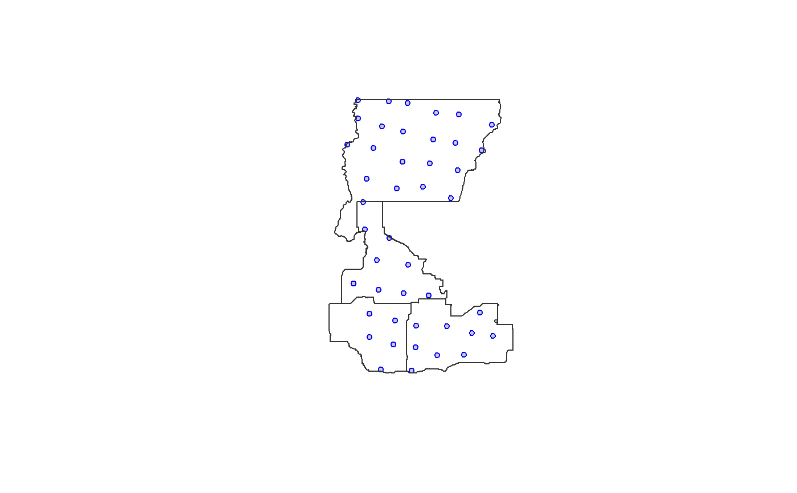

R/ace_get_cam.R
ace_get_cam.RdSubset camera deployments by a specified spatial area of interest
ace_get_cam(aoi, group_id = NULL, dep = NULL, coords = NULL, crs = 4326)
| aoi | The area of interest as an sf, sfc, or sp (SpatialPolygonsDataFrame) object |
|---|---|
| group_id | If aoi contains multiple polygons, name of the attribute to be appended to the output dataframe as identifier |
| dep | A dataframe of camera deployment locations as coordinate points; defaults to NULL, in which case ABMI camera deployment locations are used. |
| coords | If dep is specified, names of the of numeric columns holding coordinates |
| crs | coordinate reference system; integer with the EPSG code, or character with proj4string; defaults to 4326. |
A dataframe of camera deployments within the supplied area of interest (aoi)
library(sf)#># Example aoi of four Wildlife Management Units (WMUs) in Alberta: wmu_sample <- st_read(system.file("extdata/wmu_sample.shp", package = "abmi.camera.extras"))#> Reading layer `wmu_sample' from data source `C:\Users\mabec\AppData\Local\Temp\RtmpKCoVr5\temp_libpath165c712b2512\abmi.camera.extras\extdata\wmu_sample.shp' using driver `ESRI Shapefile' #> Simple feature collection with 4 features and 5 fields #> geometry type: POLYGON #> dimension: XY #> bbox: xmin: 632139.5 ymin: 5997019 xmax: 776266.6 ymax: 6209376 #> projected CRS: NAD83 / Alberta 10-TM (Forest)# Obtain ABMI deployments in sample WMUs, keeping unit name wmu_sample_deployments <- ace_get_cam(wmu_sample, group_id = WMUNIT_NAM)#>#>#> Warning: GDAL Message 1: +init=epsg:XXXX syntax is deprecated. It might return a CRS with a non-EPSG compliant axis order.